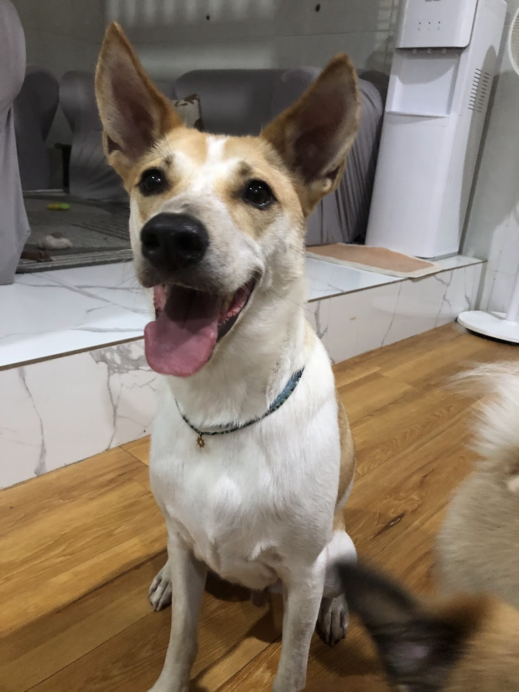

Visit Bali
Enjoy the island's natural wonders, including its beaches, lush jungles, lake and tropical scenery.
Top three activities to do at Bali

Go to the iconic rice terraces
Experiencing the traditional Balinese "Subak" irrigation system, a UNESCO World Heritage site.

Go to the Beaches
Experiencing the white sands to the dramatic cliffs and the black sands, the scenery is breathtaking.

Enjoy the Lakes
Enjoy Bali's Cultural and the complex features traditional Balinese architectural elements.

Your guide
"I have lived at Bali for over 3 years, so I can show you all of its best parts and hidden secrets."